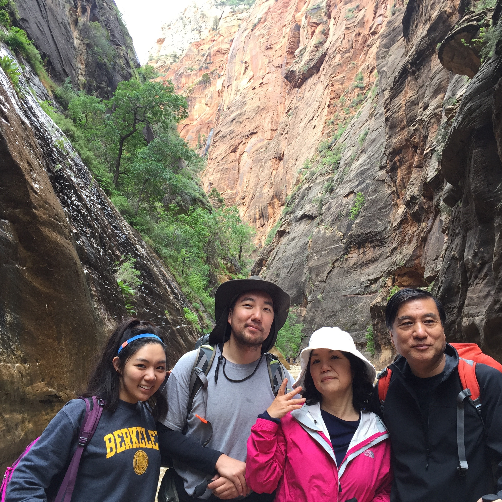

About

About Andy
Hello My name is Hannah and I created this site for my brother! Happy Birthday Po-bear! I just wanted to say how lucky I am to have the greatest brother in the world. Even though I annoy you a lot and make you smh all the time, I'm glad that God gave me a best friend to grow up with. From hiking in Zion to letting me tag along to Ed Sheeran concerts, I have had so many great memories with you and I can't wait to share another 22+ years with my Po. Thanks for being the most awesome older brother I know and I'm so grateful to have someone like you to watch over me! HAPPY BIRTHDAY AND I HOPE 30 IS THE MOST LIT YEAR YET!
Follow Po
Contact Andy